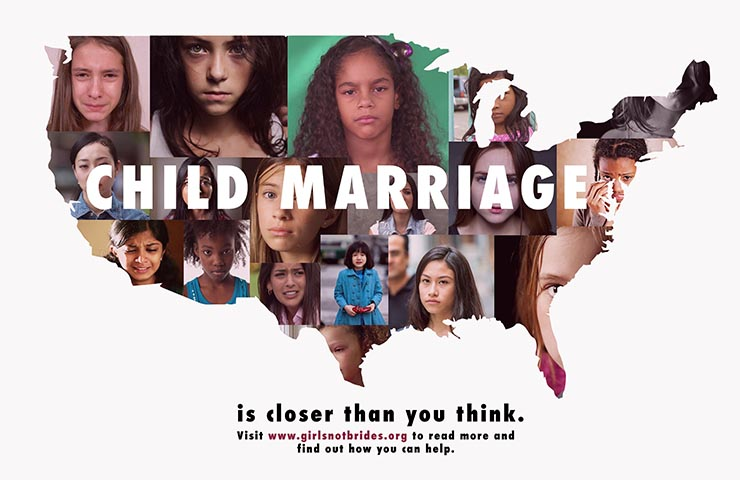
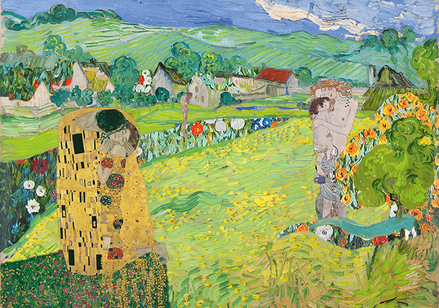
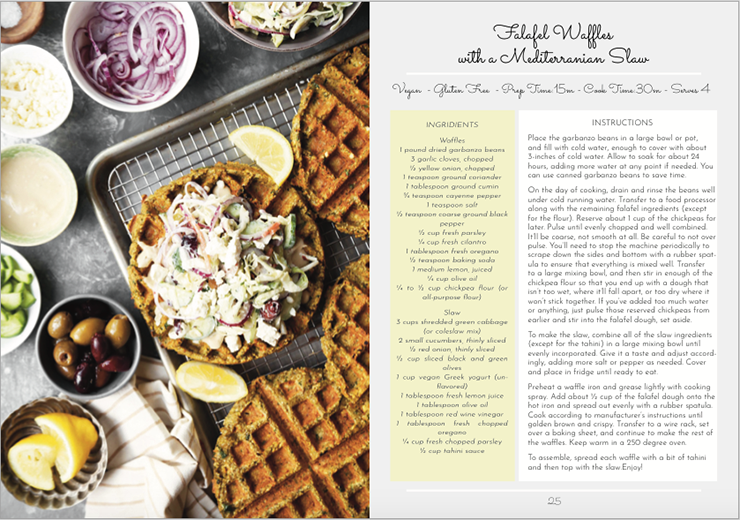

Here are some of my past student projects:
MMA 100 Class at BMCC
Human Rights Poster
This poster was created as a part of Human Rights campaign based on Article 16 and in order to attract attention to problems of child marriage in the USA.

Art History Montage
This project involves use of Adobe Photoshop to create a photo-montage based on Art Historical images of your choice that reference an artist. I chose G.Klimt and V. Van Gogh as referenced artists.

Recipe Book Design
Creating a Recipe Book Design: choosing recipe and photography sources, applying design principles to create a practical and visually appealing spread.
